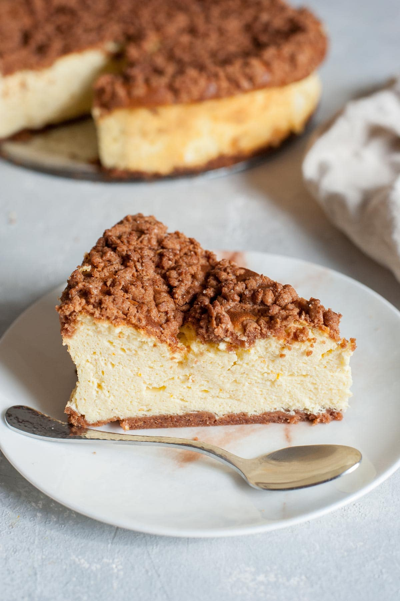

Cheesecake

Description
This cheesecake recipe was created by me.
Well, actually it was first created by my grandmother, and my mother tweaked the recipe to her liking, and then I tweaked it to my liking.
I made the recipe healthier than what it originally was by removing most of the sugars, and adding moisture by using other ingredients to replace the lack of sugar.
Ingredients
- 5 eggs
- ¼th cup sugar
- 1 tsp baking power
- 1 tsp vanilla extract
- ¼ cup flour
- ½ cup orange juice or 1 large organge
- ½ cup milk
- 500-gram farmer cheese or tvorog
- 2 cups Greek yogurt
- 2 cake crusts
- 200-gram cookies (any flavor)
- 2 pie crusts
Steps
- Preheat the oven to 350°.
- Separate the eggs, putting the whites into a mixing bowl and the egg yolks into a separate bowl.
- Start beating the egg whites, adding an eighth cup of sugar (little by little) until it forms stiff peaks.
- Start beating the egg yolks in another bowl, adding the rest of the sugar until it becomes a color similar to that of a lemon. (Note, this will not form stiff peakes).
- Mix in the baking powder, vanilla extract, flour, orange juice, milk, farmer cheese, and Greek yogurt, to the egg yolk mixture.
- Once it is all incorporated, fold in the egg whites until it is all incorporated.
- Pour the cheesecake batter into 2 cake crusts and then grate cookies into small bits, covering the cheesecakes.
- Bake the cheesecakes in the oven for 45-55 minutes at 350°, depending on your oven.
- Check on the cheesecakes at the 45-minute mark, shaking them to see if they are still raw. If they wobble a bit in the center then they are fully baked, if they wobble a lot then they need a bit more time.
- Once they are finished baking, let them cool on the counter or in the oven with the door open for 30-45 minutes (with the oven turned off).
- Place them in the fridge for a couple of hours, and enjoy chilled!